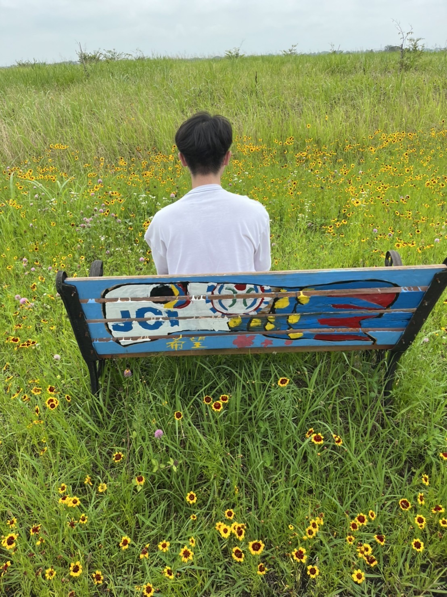
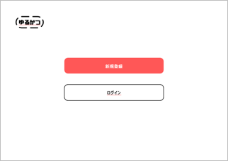
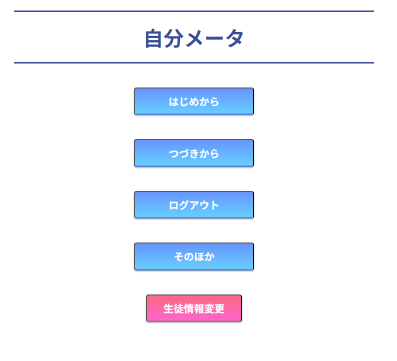

委員会活動
制作物
TOP
小島悠平
日本工業大学 先進工学 データサイエンス学科 3年
▶制作物
データサイエンスとプログラミングを学習しました。
講義では、C、R、linux、js、Python、HTML、CSSを学習し、WEBサイト作成、データ分析、アプリケーションの開発を行いました。
WEBサイト作成では、所属している委員会の活動を紹介し、250人の中から優秀者として選出されました。
データ分析は、野球選手の投球フォームのデータ分析し、選手ごとの傾向と対策方法を考えました。
アプリケーションの開発では、総合的なヘルスケアアプリの作成を時現在進行中です。
他にも、児童養護施設で活用されている精神分析ツールの要件改善等を行い実際に利用していただきました。
Webサイト

アプリケーション開発

福祉プロジェクト